github加hexo搭建个人博客（四）
文章书写和图片插入
文章创建
在 My_Blog 目录下打开 Git Bash ，输入：
hexo new [layout] "文章名字" # layout 可以省略 |
关于 layout 的说明可以参考，这篇博客和官方文档。
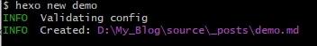
执行结束后会在 My_Blog\source_posts 文件夹下面生成 demo.md 文件。 hexo 支持将 markdown 语法写出来的文章转换为 Html 的格式。 因此我们在demo.md 文件中只需要按照 markdown 语法进行写作就可以了。 markdown 的语法可以参考这篇知乎专栏。书写 markdown 的软件，我使用的是 markdownpad2 和 awesomium_v1.6.6_sdk 。软件的下载和安装请参考：markdownpad2的安装和破解。
软件安装成功后，直接打开 demo.md ，输入博客内容就行，如图：
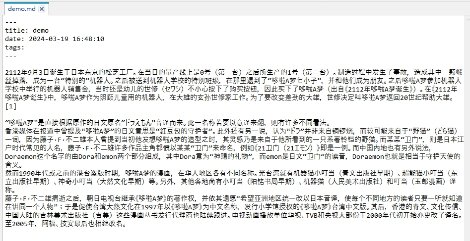
依次在 Git Bash 中输入命令：
hexo clean |
部署到 github 上，进入博客网站，可以看到：
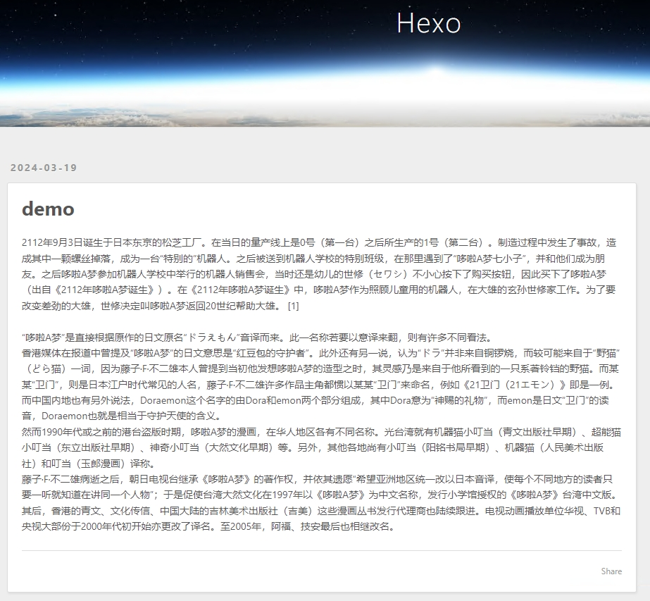
图片的插入
修改主目录 My_Blog 中的配置文件 _config.yml 中的参数：
post_asset_folder: true |
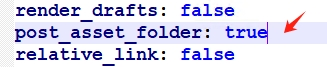
修改之后，每次我们用命令在 _posts 文件夹下面生成 .md 文件时，将会同时生成一个同名的文件夹，图片就可以放在这个文件夹下。
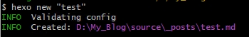
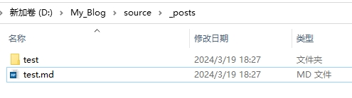
在 Git Bash 输入：
npm install hexo-asset-image --save |
安装插件。
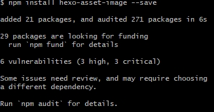
按照官方的使用说明。
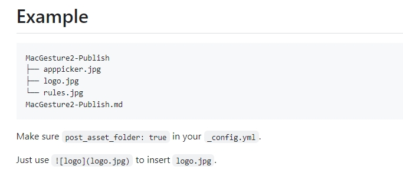
我的图片位置和文档中的书写方法。
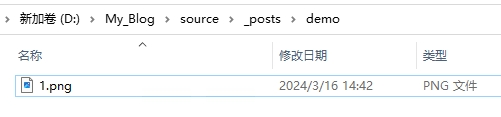
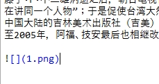
部署成功后，发现图片无法显示：
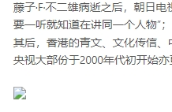
我在这里卡了好久，在网上找了好多教程，都发现没有用。我用谷歌浏览器的开发者工具，发现在图片的 url 中莫名其妙会多出来一个 .com ，完全不能理解。
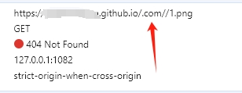
我都快放弃了，最后在一篇知乎文章中找到了解决方案。主要是这个插件太老了，出bug了，作者也不更新了，而hexo 都已经更新了好几个版本了。解决方法是在根目录中，我这里是 My_Blog ，按照以下顺序：
node_modules -> hexo-asset-image -> index.js |
- 找到 index.js 文件
- 用记事本打开 index.js 文件
- 修改内容 index.js 里面的内容
修改前：
$(this).attr('src', config.root + link + src); |
修改后：
$(this).attr('src', src); |
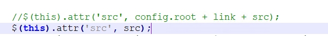
重新部署到 github 上，可以看到图片加载成功！
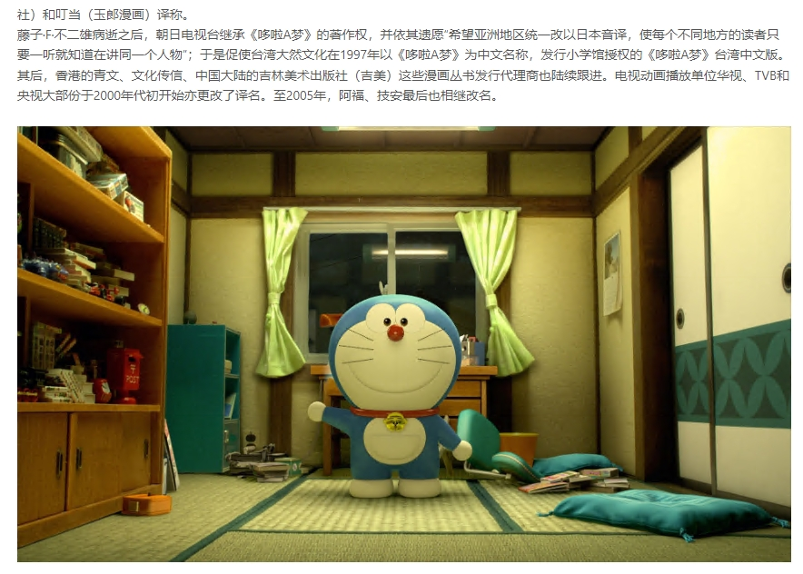